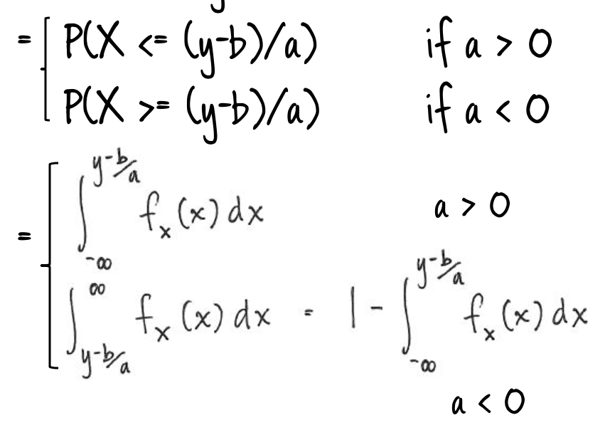

Chapter 4 Module 4: Describing Data, Joint and Conditional Distributions of Random Variables
Module Sections:
- Functions of Random Variables
- Moments of a Distribution
- Expectation, Variance, and an Introduction to Regression
- Module 4: Homework
Module Content:
- Joint, Marginal and Conditional Probabilities (./files/M3/JointMarginalandConditionalProbabilities.pdf) <- last few slides start this module
- Functions of Random Variables
4.1 Functions of Random Variables
Before discussing statistics, we need to understand probability and how random variables behave.
Suppose we have some random variable x, we want to know how a new random variable Y = h(X) (some function of x) is distributed. If we have a distribution \(Y = |2x| + 3\) where X has a PDF \(f_x(x) = 1 - |x| \; for -1 <= x <= 1\). We can think about what each element does to the random variable as we move from x to y as shown below e.g. we start with x, then move to 2x, then to the absolute value of X then in the final image we add 3 three which moves the distribution along to the right.

There are various approaches to finding out the distribution of a function of random variables, however the full range of methods is beyond the scope of this class. What the course does cover is one important method which can be applied generally.
If we have a random variable x and it has a PDF \(f_x(x)\) and we want the distribution of y which is some function h of the random variable x e.g. \(Y = h(y)\). One way we can find h is by first finding the CDF of y, which we find by integrating the PDF of x over the region x such that h(x) <= y. Then, when we have the CDF of y, then if it is continous, we take the derivate \(f_y(y) = dF_y(y) / dy\). If it is a discreet RV, the approach is different to find the PF of the CDF.
- For a continous variable the important thing is that we “integrate over the appropriate region” then we take the derivate to find the PDF
If we wanted to find the CDF, this is obtained by integrating the PDF, so to obtain the density from the CDF you would need to differentiate the CDF.
In the course we will look at 4 types of examples:
- Linear transformation of a single random variable
- Probability integral transformation
- Convolution
- Order statistics
We often want to transform one variable in to another, for instance by using a linear transformation. An example would be converting feet in to meters. OR there may be some underlying theory which relates one variable to another. As before, if we want to understand how Y is distributed we “integrate over the appropriate region”. We typically want to take the region which excludes the situation where the variable is 0 since this would give us a “degenerate” RV which is actually a point mass (at 0). For \(Y = aX + b\) Y is distributed $ FY(y) = P(Y <= y) = P(aX+b <= y)$. a could be positive or negative so we end up with two statements - a negative and positive one. To find out Y, we integrate over the region of the statement of x we are interested in.
